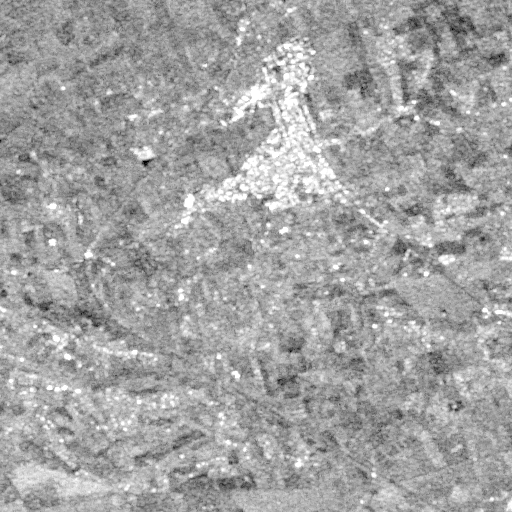

See the change.
Decide what to inspect.
A reproducible, offline demonstration on a genuine published SAR benchmark chip in Spain. Compare two detection methods, select a candidate region, and download its scientific evidence.
Before / After radar comparison


Two real radar images on the same pixel grid. First band only; this is not a false-color optical photo.
Regions are ranked by detected contiguous area. No ground-truth labels or population counts are used in the ranking.
Priority review queue
Largest contiguous candidate regions first. This is a review workload queue, not a disaster risk ranking.
Choose a region to calculate surrounding review area.
Changing the radius expands an inspection footprint; it does not estimate nearby residents without a matched population dataset.
Retrospective model trade-off
The evaluation uses published labels for this held-out chip, never for prediction selection or priority sorting. No method universally wins.
| Held-out method | Precision | Recall | F1 | FP pixels | FN pixels |
|---|
What the terms mean
Precision asks how many predicted water/flood pixels matched the published labels. Recall asks how much labeled water/flood was recovered. Lower false positives may mean more misses; metrics do not measure confirmed damage.
Traceability and decision note
Each record identifies the source images, the derived ML prediction, and its location on the raster grid. Downloadable JSON includes file hashes and the evidence limitations.
Scientific boundaries
Why is exposure unavailable?
The original supplied ZIP has no matched Spanish population raster with provenance. By default the demo reports Unavailable rather than an invented figure. To attach a verified source, use the included rebuild tool with --population-raster, --population-source and --population-year. Any resulting counts are modeled spatial overlap, not people confirmed affected.